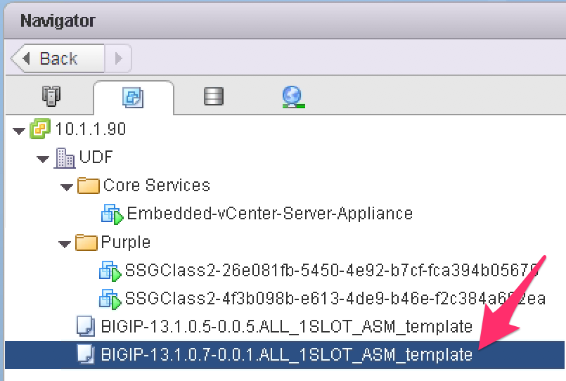

F5 BIG-IQ & Cloud Edition Lab > Class 2: BIG-IQ Deployment with auto-scale on AWS, Azure & VMware (Cloud Edition) > Module 3: Upgrade - Scaling up a SSG (VMWare) Source | Edit on
Lab 3.1: Update our Cloud Environment¶
When we deploy or scale-out a SSG. The provisioned instances will rely on the
information specified in the Cloud Environment to know what it needs to deploy.
In the (Module1)Lab 1.2: Define your Cloud Environment, we defined the Cloud Environment
used by our SSG SSGClass2
This Cloud Environment specifies a few information:
vCenter credentials
VMWare specific information like Datacenter name, resource pool, folder, …
VM image template to clone and start as a new SSG instance
Networking setup for the new VM image
The key component for the upgrade/scale-up use cases is the VM Image field. This field
specifies the VM Template we need to clone as our new instance. What is important is that
when we created this template we:
used a specific F5 Virtual edition image that will enforce the version to use
we allocated compute resources to it: vCPUs, Memory, Datastore to it.
we specified the number of interfaces to attach to our Virtual edition
Here is the configuration of the VM template we use in our existing SSG SSGClass2

Here we can see that we use:
2 vCPUs
8 Gb of Memory
BIG-IP version 13.1.1
[New 6.0.1] you can also check the BIG-IP version by selecting the device part of the SSG.

If we need to upgrade AND/OR scale-up our SSG, we just need to do the following:
Deploy a new F5 Virtual Edition image as a template with the relevant version
Update (or not) the resources allocated to it if we want to scale up (more vCPUs, memory)
Note
we could also scale down a SSG if we realized we allocated too much compute to it
In this lab, we already have another VM template available to test this: BIGIP-14.0.0.1-0.0.2.ALL_1SLOT_template
{kind=link}
We can review the configuration of this VM template:
4 vCPUs
8 Gb of Memory
BIG-IP Version 14.0.0
{kind=link}
So if we switch from our previous template to this one, we will UPGRADE our environment AND SCALE-UP:
upgrade from 13.1.0.7 to 13.1.1 or 14.0.0
add more vCPUs to the instances (2 -> 4 vCPUs)
In your BIG-IQ UI, Go to Applications > Environments > Cloud Environments, Select
SSGClass2VMWareEnvironment to edit it.
Update the VM Image field to use the new VM Template: BIGIP-13.1.0.7-0.0.1.ALL_1SLOT_template or BIGIP-13.1.1-0.0.4.ALL_1SLOT_template

Click Save & Close. Now that our Cloud Environment is updated, we can upgrade our SSG.
Note
bear in the mind that from now on, if our SSG need to scale-out, it will use
this new VM Template also